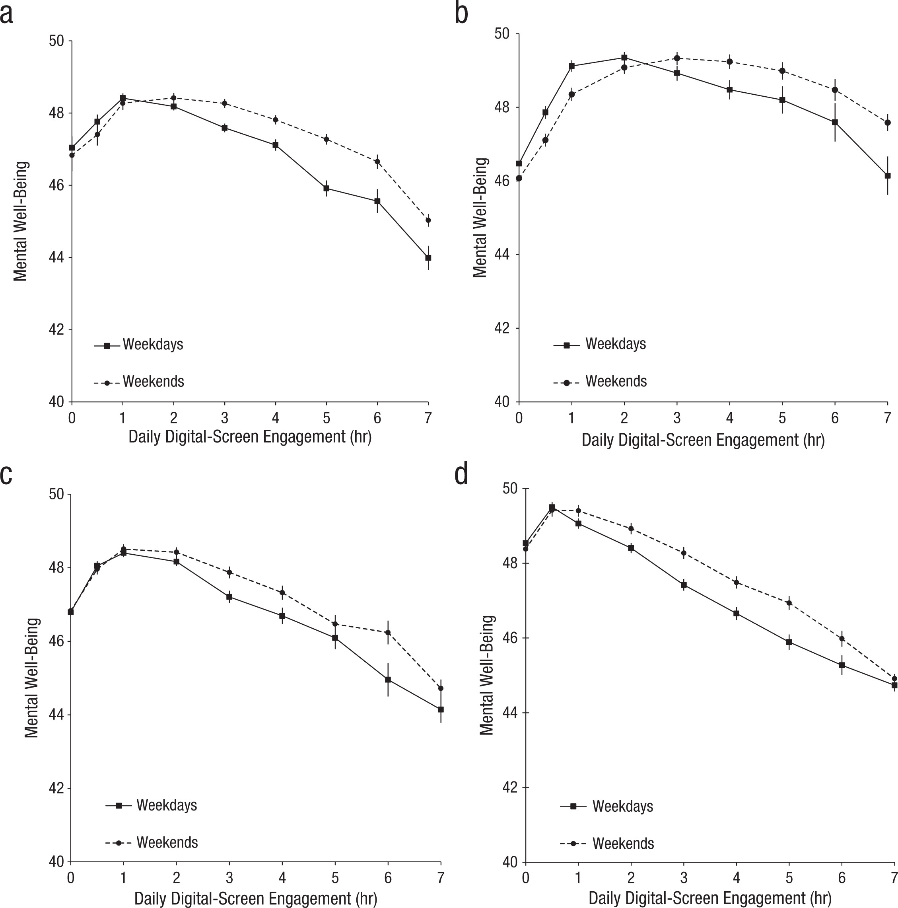
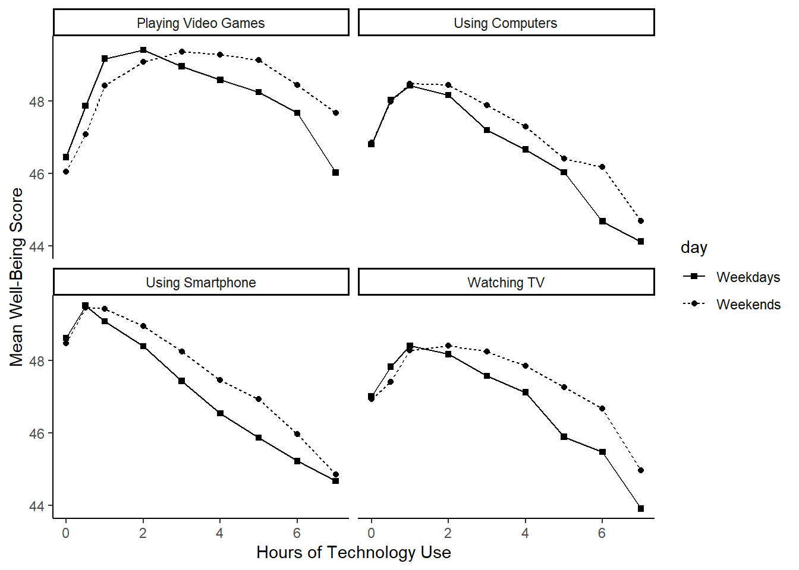

11 Multiple regression
Intended Learning Outcomes
By the end of this chapter you should be able to:
- Apply and interpret multiple linear regression models.
- Interpret coefficients from individual predictors and interactions.
- Visualise interactions as model predictions to understand and communicate your findings.
- Calculate statistical power for a multiple regression model.
In the previous chapter, we have looked at simple regressions - predicting an outcome variable using one predictor variable. In this chapter, we will expand on that and look at scenarios where we predict an outcome using more than one predictor in the model - hence, multiple regression.
Individual Walkthrough
11.1 Activity 1: Setup & download the data
This week, we will be working with a new dataset. Follow the steps below to set up your project:
- Create a new project and name it something meaningful (e.g., “2B_chapter11”, or “11_multople_regression”). See Section 1.2 if you need some guidance.
-
Create a new
.Rmdfile and save it to your project folder. See Section 1.3 if you need help. - Delete everything after the setup code chunk (e.g., line 12 and below)
-
Download the new dataset here: data_ch11.zip. The zip folder includes:
- the demographics data file (
Przybylski_2017_demographics.csv) - the screentime data file (
Przybylski_2017_screentime.csv) - the wellbeing data file (
Przybylski_2017_wellbeing.csv), and the - the codebook (
Przybylski_2017_Codebook.xlsx).
- the demographics data file (
- Extract the data file from the zip folder and place it in your project folder. If you need help, see Section 1.4.
Citation
Przybylski, A. K., & Weinstein, N. (2017). A Large-Scale Test of the Goldilocks Hypothesis: Quantifying the Relations Between Digital-Screen Use and the Mental Well-Being of Adolescents. Psychological Science, 28(2), 204-215. https://doi.org/10.1177/0956797616678438
Abstract
Although the time adolescents spend with digital technologies has sparked widespread concerns that their use might be negatively associated with mental well-being, these potential deleterious influences have not been rigorously studied. Using a preregistered plan for analyzing data collected from a representative sample of English adolescents (n = 120,115), we obtained evidence that the links between digital-screen time and mental well-being are described by quadratic functions. Further, our results showed that these links vary as a function of when digital technologies are used (i.e., weekday vs. weekend), suggesting that a full understanding of the impact of these recreational activities will require examining their functionality among other daily pursuits. Overall, the evidence indicated that moderate use of digital technology is not intrinsically harmful and may be advantageous in a connected world. The findings inform recommendations for limiting adolescents’ technology use and provide a template for conducting rigorous investigations into the relations between digital technology and children’s and adolescents’ health.
The data is available on OSF: https://osf.io/bk7vw/
Changes made to the dataset
- We converted the SPSS file into a CSV file. There is a CSV file in their OSF folder, however, it does have any labels or values explained. Therefore, we started from the SPSS file that has a bit more information.
- We reduced the dataset by selecting some of the variables relating to demographics, screentime and wellbeing.
- Data was separated into 3 files: demographics, screentime, and wellbeing.
- Screentime values were recoded and display hours according to the codebook.
- Rows with missing values were excluded in
screentime.csvandwellbeing.csv. - We also created a codebook for the variables we selected.
11.2 Activity 2: Load in the library, read in the data, and familiarise yourself with the data
Today, we will be using the packages tidyverse, sjPlot, performance, and pwr, along with the datasets Alter_2024_data.csv.
As always, take a moment to familiarise yourself with the data before starting your analysis.
Once you have explored the data objects and the codebook, try and answer the following questions:
- The variable Gender is located in the object named .
- The wellbeing data is in format and contains observations from participants.
- The wellbeing questionnaire has items.
- Individual participants in this data set are identified by the variable called . This variable will allow us to link information across the three tables.
- Are there any missing data points?
Potential Research Question & Hypthesis
There is ongoing debate about the impact of smartphones on well-being, particularly among children and teenagers. Hence, we will examine whether smartphone use predicts mental well-being and whether this relationship differs between male and female adolescents.
- Potential research question: “Does smartphone use predict mental well-being, and does this relationship differ between male and female adolescents?”
- Null Hypothesis (H0): “Smartphone use does not predict mental well-being, and there is no difference in this relationship between male and female adolescents.”
- Alternative Hypothesis (H1): “Smartphone use is a significant predictor of mental well-being, and the effect of smartphone use on well-being differs between male and female adolescents.”
Note that in this analysis, we have:
- a continuous* DV, well-being;
- a continuous* predictor, screen time;
- a categorical predictor, gender.
* these variables are only quasi-continuous, inasmuch as only discrete values are possible. However, there are a sufficient number of discrete categories that we can treat them as effectively continuous.
11.3 Activity 3: Compute descriptives
Today, we will be dealing with the majority of data wrangling in the following activities. So let’s bring Computing descriptives forward
11.3.1 Well-being
We need to do some initial data wrangling on wellbeing. For each participant, compute the total score for the mental health questionnaire. Store the output in a new data object called wemwbs.
The new dataset should have two variables:
-
Serial- the participant ID. -
WEMWBS_sum- the total WEMWBS score.
In the original paper, Przybylski and Weinstein (2017) reported: “Scores ranged from 14 to 70 (M = 47.52, SD = 9.55)”. Can you reproduce these values?
11.3.2 Screentime
We want to calculate means and standard deviations of the hours of smartphone use during the week and on the weekend.
11.4 Activity 4: Recreating the plot from the paper
If there was a bit of a challenge, this is it. We can wrangle the data to plot the data like the original article (shown below).

The graph shows that smartphone use of more than 1 hour per day is associated with increasingly negative well-being.
We can plot the relationship between well-being and hours of technology use, split into four categories of technology (video games, computers, smartphones, TV).
There is some faceting going on and you will not have been introduced to all the functions we need.
Now it’s just figuring out which sequence we need them to be in. There are steps to do (or that easier to do) in the dataframe and then there is plotting.
Sooo, let’s start with any changes we can apply to the dataframe screentime. We should store the new output in an object called screen_long.
Step 1: Pivot screentime into long format.
Step 2: To be able to access information on weekday/weekend and on the four categories of technology, we need to separate information in the current column levels. Anything before the separator _ is category of technology; anything after is related to weekday/weekend (e.g., Watch_we, Smart_wk). That is easier done when the data is in long format.
Step 3: The values Watch, Smart, we or wk are not really informative and these will be the labels that are displayed on the facets and legends in the final plot. Tidying a legend label can still be done in the plots, but for facets it’s a nightmare, so better do that here. So here we want to relabel values as follows:
- “Watch” should become “Watching TV”,
- “Comp” -> “Playing Video Games”,
- “Comph” -> “Using Computers”,
- “Smart” -> “Using Smartphone”,
- “wk” -> “Weekdays”, and
- “we” ~ “Weekends”.
Step 4: We have all information for the plot in one place. Join screen_long and wemwbs together so that participants have values in both dataframes.
Step 5: For each technology type and screentime hours, compute averages of well-being for Weekdays and Weekends. Maybe steps 4 and 5 are better stored in a separate data object called dat_means.
Now we can plot. There are a few new features in relation to line plots and point shapes. Check them out.
ggplot(dat_means, aes(x = hours, y = mean_wellbeing, linetype = day, shape = day)) +
geom_line() +
geom_point() +
scale_shape_manual(values=c(15, 16)) +
facet_wrap(~ technology_type) +
theme_classic() +
labs(x = "Hours of Technology Use",
y = "Mean Well-Being Score")
- aes
linetypechanges the type of line, e.g., solid or dotty, and here we specified it to be different for each type of day. More on line types can be found here: https://sape.inf.usi.ch/quick-reference/ggplot2/linetype.html - to change the shape of the points, we specified
shapein the aes, and we defined that it should depend on line of day. However, the point shapes turned into round dots and triangles. Since the original plot suggests dots and squares, we fixed that by adding thescale_shape_manual()function. More on point shapes can be found here: https://www.sthda.com/english/wiki/ggplot2-point-shapes
If you are looking really closely, you will notice that the boxes are in a different order and that the x- and y-axes span a bit further. Feel free to fix that yourself.
Also, using facets rather than individual plots means that we have axes labels that span all plots, rather than individual plots we patch together. Plus, the legend is on the side and not within each square. Ah well. Let’s call it a conceptual replication, then, shall we?
11.5 Activity 5: Dataframe for the regression model
11.5.1 Final data wrangling steps
Create a new data object that has the mean number of hours per day of smartphone use for each participant, averaged over weekends/weekdays. Because Przybylski and Weinstein’s graph showed that smartphone use of more than 1 hour per day is associated with increasingly negative well-being, we want to filter the data to only include those who use a smart phone for more than one hour per day.
We have done the legwork above when we created screen_long, so we could start from there, or we can go back to our original screentime object. Pick the option that makes most sense to you.
We want to join the wrangled data with well-being, as we did above, but also join with the rest of the participant information, since we need the Gender variable.
Store that output in an object called data_smartphone.
11.5.2 Mean-centering variables
As you have seen in the lectures, when you have continuous variables in a regression model, it is often sensible to transform them by mean centering. You mean center a predictor X by subtracting the mean of the predictor (X_centered = X - mean(X)) or you can use the scale() function. This has two useful consequences:
The model intercept represents the predicted value of \(Y\) when the predictor variable is at its mean, rather than at zero in the unscaled version.
When interactions are included in the model, significant effects can be interpreted as the overall effect of a predictor on the outcome (i.e., a main effect) rather than its effect at a specific level of another predictor (i.e., a simple effect).
For categorical predictors with two levels, these become coded as -.5 and .5 (because the mean of these two values is 0). This is also known as deviation coding.
If we used dummy coding (i.e., leaving the categorical predictor as 0 and 1) instead of deviation coding, the interpretation would change slightly:
- Dummy-coding interpretation: The intercept represents the predicted outcome for the reference group (coded as 0), and the coefficient for the categorical predictor represents the difference in the outcome between the two groups.
- Deviation-coding interpretation: The intercept represents the overall mean outcome across both groups, and the coefficient for the categorical predictor represents the average difference between the two groups, centered around zero.
Use mutate() to add two new variables to data_smartphone:
-
average_hours_centered: calculated as a mean-centered version of thetotal_hourspredictor -
gender_recoded: recode Gender .5 for “Male” and -.5 for “Female or unknown”.
11.6 Activity 6: Compute the regression, confidence intervals, and effect size
For the data in smart_wb, use the lm() function to calculate the multiple regression model:
\(Y_i = \beta_0 + \beta_1 X_{1i} + \beta_2 X_{2i} + \beta_3 X_{3i} + e_i\)
where
\(Y_i\) is the well-being score for participant \(i\);
\(X_{1i}\) is the mean-centered smartphone use variable for participant \(i\);
\(X_{2i}\) is gender (-.5 = female, .5 = male);
\(X_{3i}\) is the interaction between smartphone use and gender (\(= X_{1i} \times X_{2i}\))
In R terms, this translate to the following format:
The code lm(OutcomeVariable ~ PredictorVariable1 + PredictorVariable2, data) will add predictors 1 and 2. This will provide you with the contributions of each predictor to explain the outcome variable, i.e. main effects only.
However, if you are also interested in the interaction between the two predictors, then you would:
- use a
*instead of a+:lm(OutcomeVariable ~ PredictorVariable1 * PredictorVariable2, data)for the model to include 2 main effects and the interaction. OR - use the longer format and add the interaction term manually
lm(OutcomeVariable ~ PredictorVariable1 + PredictorVariable2 + PredictorVariable1:PredictorVariable2, data). Notice the colon:
::: {.callout-note icon=“false”}
11.7 Your Turn
- Save your model to the object
mod. - Run the
summary()of your model to see the output of the regression. - Compute confidence intervals
- Compute the effect size \(f^2\)
These are the exact same functions as last time, except for the model including more variables.
Answer the following questions:
The interaction between smartphone use and gender is shown by the variable , and this interaction was at the \(\alpha = .05\) level.
To 2 decimal places, adjusted \(R^2\) suggests the overall model explains what percentage of the variance in well-being scores?
The p-value for the overall model fit is
<2e-16. Is this statistically significant? . How would you note that p-value in APA style when writing up the results?What is the observed effect size (in \(f^2\)) for the study to 3 decimal places?
11.8 Activity 7: Visualising interactions
It is very difficult to understand an interaction from the coefficient alone, so your best bet is visualising the interaction to help you understand the results and communicate your results to your readers.
There is a great package called sjPlot which takes regression models and helps you plot them in different ways. We will demonstrate plotting interactions, but for further information and options, see the online documentation.
To plot the interaction, you need the model object (not the summary), specify “pred” as the type as we want to plot predictions, and add the terms you want to plot.
What is the most reasonable interpretation of the interaction?
plot_model() uses ggplot2 in the background. You can add further customisation by adding layers after the initial function. You can also use ggsave() to save your plots and insert them into your work.
11.9 Activity 8: Check assumptions
Now it’s time to test those pesky assumptions. The assumptions for multiple regression are the same as simple regression but there is one additional assumption, that of multicollinearity. This is the idea that predictor variables should not be too highly correlated.
Assumptions are:
- The outcome/DV is a interval/ratio level data, and the predictor variable is interval/ratio or categorical (with two levels).
- All values of the outcome variable are independent (i.e., each score should come from a different participant).
- The predictors have non-zero variance.
- The relationship between outcome and predictor is linear.
- The residuals should be normally distributed.
- There should be homoscedasticity (homogeneity of variance, but for the residuals).
- Multicollinearity: predictor variables should not be too highly correlated.
We can use the plot() function for diagnostic plots or the check_model() from the performance package.
One difference from when we used check_model() previously is that rather than just letting it run all the tests it wants, we are going to specify which tests to stop it throwing an error.
A word of warning - these assumption tests will take longer than usual to run because it’s such a big data set.
Assumptions 1-3
From the work we have done so far, we know that we meet assumptions 1-3.
Assumption 4: Linearity
We already know from looking at the scatterplot that the relationship is linear, but the residual plot also confirms this.
Assumption 5: Normality of residuals
The residuals look good in both plots and this provides an excellent example of why it’s often better to visualise than rely on statistics. With a sample size this large, any statistical diagnostic tests will be highly significant as they are sensitive to sample size.
Assumption 6: Homoscedasticity
The plot is missing the reference line. Fun fact, this took us several days of our lives and asking for help on social media to figure out. The reason the line is not there is because the data set is so large that is creates a memory issue. However, if you use the plot() version, it does show the reference line.
It is not perfect, but the reference line is roughly flat to suggest there are no serious issues with homoscedasticity.
Assumption 7: Multicollinearity
From the collinearity plot, we can see that both main effects and the interaction term are in the “green zone” which is great. Howeverm we can also test this statistically using check_collinearity() to produce VIF (variance inflation factor) and tolerance values.
Essentially, this function estimates how much the variance of a coefficient is “inflated” because of linear dependence with other predictors, i.e., that a predictor is not actually adding any unique variance to the model, it’s just really strongly related to other predictors. You can read more about this online. Thankfully, VIF is not affected by large samples like other statistical diagnostic tests.
There are various rules of thumb, but most converge on a VIF of above 2 - 2.5 for any one predictor to be problematic. Here we are well under 2 for all 3 terms of the model.
| Term | VIF | VIF_CI_low | VIF_CI_high | SE_factor | Tolerance | Tolerance_CI_low | Tolerance_CI_high |
|---|---|---|---|---|---|---|---|
| average_hours_centered | 1.721968 | 1.704219 | 1.740165 | 1.312238 | 0.5807308 | 0.5746582 | 0.5867789 |
| gender_recoded | 1.035552 | 1.028488 | 1.044369 | 1.017621 | 0.9656682 | 0.9575159 | 0.9723014 |
| average_hours_centered:gender_recoded | 1.716349 | 1.698683 | 1.734463 | 1.310095 | 0.5826319 | 0.5765474 | 0.5886915 |
11.10 Activity 9: Sensitivity power analysis
As usual, we want to calculate the smallest effect size that our study was able to detect, given our design and sample size.
To do this, we use the pwr.f2.test() function from the pwr package. This is the same as in chapter 10 for simple linear regression. Remember the arguments for this function:
-
u= Numerator degrees of freedom. This the number of coefficients you have in your model (minus the intercept) -
v= Denominator degrees of freedom. This is calculated as \(v=n-u-1\), where \(n\) is the number of participants. -
f2= The effect size. Here we are solving the effect size, so this parameter is left out -
sig.level= The significance level of your study. This is usually set to 0.05 -
power= The power level of your study. This is usually set to 0.8, but let’s go for 0.99 this time (just because we have such a large number of participants)
Run the sensitivity power analysis and then answer the following questions:
- To 3 decimal places, what is the smallest effect size that this study could reliably detect?
Since the observed effect size from our inferential statistics was than the effect you could reliably detect with this design, the test was to detect the observed effect.
11.11 Activity 10: The write-up
All continuous predictors were mean-centered and deviation coding was used for categorical predictors. The results of the regression indicated that the model significantly predicted wellbeing \((F(3, 71029) = 2451, p < .001, R^2_{Adjusted} = .094, f^2 = .103)\), accounting for 9.4% of the variance. Total screen time was a significant negative predictor of wellbeing scores \((\beta = -0.77, 95\% CI = [-0.82, -0.73], p < .001\)), as was gender \((\beta = 5.14, p < .001\)), with girls having lower wellbeing scores than boys. Importantly, there was a significant interaction between screen time and gender \((\beta = 0.45, 95\% CI = [0.38, 0.52], p < .001\)), meaning that smartphone use was more negatively associated with well-being for girls than for boys.
Pair-coding
to be added
Test your knowledge
to be added